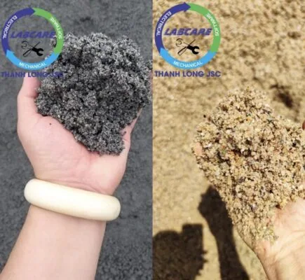
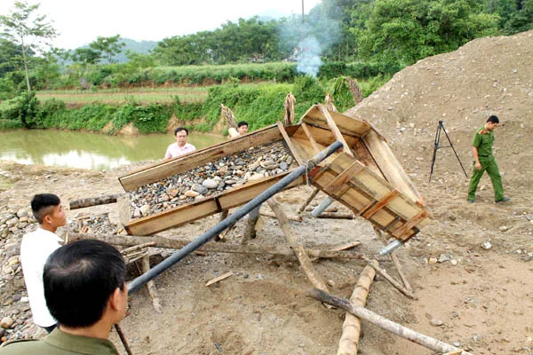
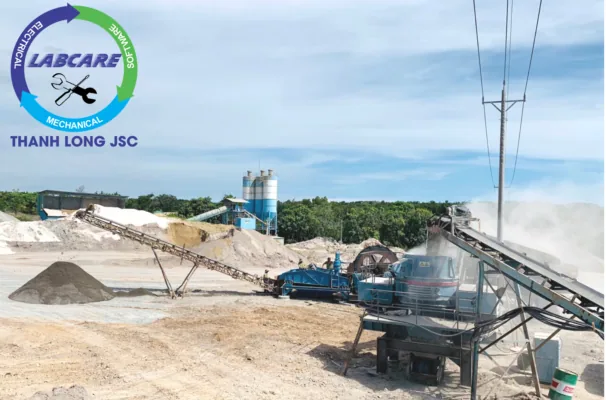
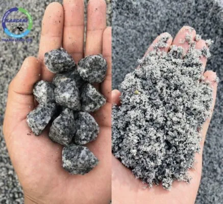
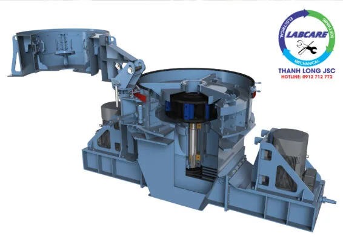

Việt Nam đang đô thị hóa nhanh chóng và sự gia tăng dân số. Thúc đẩy nhu cầu về các tòa nhà và cơ sở hạ tầng, khiến cát trở thành một mặt hàng có lượng “CẦU cao hơn CUNG”. Sản xuất cát từ máy nghiền cát SV là một cách để bảo tồn các bờ sông và bờ biển tự nhiên, nơi cát sẽ được khai thác, giảm tiêu thụ năng lượng và tận dụng chất thải tổng hợp làm nguyên liệu cho sản phẩm có thể bán được.

Theo truyền thống, cát nhân tạo được lấy từ các nguồn tự nhiên. Tuy nhiên, các quy định mới chặt chẽ hơn về môi trường đang được đưa ra để bảo vệ nguồn cát tự nhiên. Trong nhiều trường hợp, việc khai thác cát từ bờ sông và bờ biển đã bị cấm hoàn toàn. Cát là thành phần chính trong bê tông, xi măng và nhựa đường. Khi các thành phố trên khắp thế giới đang phát triển, nhu cầu về cát cũng tăng theo. Vì vậy việc lựa chọn dây chuyền máy nghiền cát SV cũng tăng lên.
Việc cạn kiệt tài nguyên cát tự nhiên là một mối quan tâm lớn, ở những khu vực có nhu cầu cao nhất, ngày càng có ít nguồn bền vững hơn. Do đó, cát phải được vận chuyển với khoảng cách xa hơn và giá cả tăng lên.

Cát nhân tạo – giải pháp tốt cho vật liệu xây dựng, bê tông nhựa đường từ máy nghiền cát SV của SRH
Cát nhân tạo là một thành phần lý tưởng cho bê tông và nhựa đường. Chất lượng của cát nhân tạo có thể được điều chỉnh và tối ưu hóa, do đó giúp giảm lượng cát cần thiết trong sản xuất bê tông và nhựa đường.
Ngoài việc sử dụng các vật liệu phế thải của các nhà máy nhiệt điện, cát xay từ đá, sỏi và các loại phụ gia khoáng vào bê tông làm cho bê tông có cường độ cao hơn. Việc sản xuất bê tông thân thiện có thể tận dụng lại các vật liệu phế thải trong khâu sản xuất để tái tạo lại làm vật liệu như các vật liệu rơi vãi, sản phẩm bê tông lỗi. Bằng cách sử dụng công nghệ máy nghiền cát SV của SRH sẽ tạo ra một loại vật liệu khoáng có thể giảm bớt đáng kể lượng xi măng và cho cường độ bê tông cao hơn nữa.
Nên chọn dây chuyền máy nghiền cát SV của SRH như thế nào?
Để tháo gỡ vướng mắc giữa nguồn cung cấp khan hiếm nhưng nhu cầu về cát sỏi thì không dừng lại. Máy nghiền cát SV của SRH sẽ tiến hành sản xuất cát nhân tạo để thay thế vật liệu xây dựng cát tự nhiên, sỏi.

Điển hình trong dây chuyền máy nghiền cát SV của SRH là một công ty đi đầu trong lĩnh vực VLXD tại Quảng Trị. Đơn vị này đã mạnh dạn đầu tư một dây chuyền máy nghiền cát SV của SRH , nghiền đá granite làm VLXD thông thường với tổng công suất đạt 115.000 m3/năm. Sản phẩm của dự án là cát nhân tạo có cỡ hạt 0,75-3mm và đá 1×2.

Tổng Giám đốc một công ty đi đầu trong lĩnh vực VLXD cho hay:. “Trên thế giới, cát nhân tạo đang được dùng phổ biến. Không những để thay thế cát tự nhiên đang ngày càng cạn kiệt, mà còn do tính chất đặc biệt của nó.
Hạt cát đồng đều hơn, có thể điều chỉnh module. Và tỷ lệ thành phần hạt theo từng yêu cầu cấp phối, cho các loại bê tông khác nhau như: Bê tông asphalt, bê tông macrosell. Bê tông xi măng, bê tông đầm lăn. Bê tông mác cao. Đặc biệt hệ thống điều khiển hoàn toàn tự động IC, giúp tối ưu hiệu suất đầu ra. Đồng thời tối thiểu điện năng tiêu thụ.
Cát nhân tạo cũng cho phép tiết kiệm xi măng, nhựa đường. Rút ngắn thời gian thi công và tăng tuổi thọ công trình. Công nghệ này đã được phát triển, và sử dụng ở các nước tiên tiến từ khoảng hơn 100 năm nay. Nhưng đối với nước ta còn khá mới lạ.
Làm thế nào để chọn được dây chuyền máy nghiền cát nhân tạo SV của SRH tiết kiệm, chính hãng, đúng giá gốc?
- Dây chuyền máy nghiền cát SV của SRH chính hãng từ đại lý hoặc nhà sản xuất, có website. Hình ảnh video đầy đủ, có chứng từ xuất xứ CO. CQ, rõ ràng, có cam kết về sản lượng, công suất máy.
- Tập trung chú ý logo, tên thương hiệu. Bởi vì có rất nhiều loại máy nhái kém chất lượng, làm sai phần này. Hàng cũ mua sơn về làm mới và thay ruột, bạc vòng bi. Sau đó bán với giá cao, sẽ không có logo hoặc cũng chẳng tìm thấy website nhận diện thương hiệu.
- Máy nghiền cát SV của SRH có hãng sản xuất động cơ uy tín, công suất động cơ thấp. Ít tiêu thụ điện năng tối ưu hóa chi phí sản xuất, gia tăng lợi nhuận.
- Chọn nhà cung cấp máy nghiền cát SV của SRH, có thời gian bảo hành trên 1 năm để trao gửi niềm tin. Thông thường các đơn vị kém chất lượng, họ sẽ không dám bảo hành với thời gian dài. Hoặc hết bảo hành thì gọi điện cũng không bao giờ nghe máy, vì lúc đó các chi tiết bên trong bắt đầu mục. Hoặc hết hạn sử dụng.
- Máy nghiền cát SV của SRH, có tài liệu hướng dẫn vận hành. Hướng dẫn bảo trì bảo quản ngày, bảo quản tuần. Bảo trì quý và chuyển giao công nghệ.
- Chọn mua dây chuyền máy nghiền cát SV của SRH, có sơ đồ công nghệ (flowsheet) khi tư vấn làm việc với khách hàng. Những phần mềm nổi tiếng chính xác, để thiết kế sơ đồ công nghệ có Shaorui Process simulator của hãng Shaorui
Ưu điểm của dây chuyền máy nghiền cát SV của SRH. Tiết kiệm, chính hãng, đúng giá gốc?
- Chi phí đầu tư hợp lý, thu hồi vốn nhanh, dễ dàng sử dụng, lợi nhuận cao.
- Sản xuất với trữ lượng vật liệu nghiền lớn, độ cứng cao, không bị dừng máy.
- Tiết kiệm điện năng tiêu thụ gấp 2 lần, so với các loại máy cùng công suất của Trung Quốc hoặc máy cũ.
- SRH là đơn vị duy nhất sử dụng phần mềm chuyên dụng, để tính toán sơ đồ công nghệ. Đồng bộ các máy trong dây chuyền tạo ra hiệu suất làm việc cao nhất. Dễ dàng theo dõi hoạt động và điều khiển qua bộ xử lý thông minh
- Các linh kiện đi kèm đa dạng, dễ dàng bảo dưỡng hoặc sửa chữa. Với đội ngũ kỹ sư giàu kinh nghiệm, tay nghề cao được đào tạo trong và ngoài nước sẽ có mặt tại hiện trường khi có sự cố.
- Kho vật tư thay thế có sẵn tại Việt Nam, kỹ sư và chuyên gia hỗ trợ lắp đặt. Chăm sóc trước và trong quá trình vận hành.
- Hỗ trợ tính năng chẩn đoán qua hình ảnh, video call ngay tại mỏ. Khắc phục lập tức sự cố, bảo đảm quá trình sản xuất liên tục.
Máy nghiền cát SV

- Cấu trúc đơn giản, dễ lắp đặt, bảo dưỡng thuận tiện và chi phí vận hành thấp.
- Dầu nhẹ được sử dụng cho hệ thống tuần hoàn bôi trơn, đảm bảo máy luôn mát.
- Lắp đặt toàn bộ hệ thống bảo vệ tự động hoá mới, hệ thống cảnh báo chấn động. Dầu lọc máy, hệ thống báo động nhiệt độ ổ đỡ…
- Sử dụng thép chống mài mòn, tuổi thọ được nâng cao 40%. Giảm giá thành vận hành xuống 40% so với các hệ máy khác.
- Hoạt động theo nguyên lý đá va đá Tốc độ rotor được điều khiển tự động có thể thay đổi được( từ 50-85m/s )-> có thể điều chỉnh tỷ lệ cát đầu ra đến 50%-70% tuỳ loại đá. . ., sản phẩm tạo ra sẻ có Module hạt đồng đều, ít hạt mịn. Tốc độ rotor từ 1500-2500 vòng/phút tỷ lệ cát cao hơn khi vòng quay rotor lớn.
- Tiết kiệm dao nghiền cát, với 35.000-40.000 khối cát/ 1 bộ dao. Đây là sản phẩm bán ưu việt nhất trên thị trường.
- Hệ thống điều khiển hoàn toàn tự động IC giúp tối ưu hiệu suât đầu ra, đồng thời tối thiểu điện năng tiêu thụ=> Không phụ thuộc vào trình độ và kinh nghiệm của người vận hành.
- Sử dụng động cơ 110kW-150KW=> tiết kiệm điện năng tiêu thụ hàng năm. Với sự cố nhỏ, hệ thống thủy lực tự nâng hạ và cảnh báo, sửa chữa rất chóng.
- Đội kỹ sư và chuyên gia, sẵn sàng hỗ trợ khách hàng 24/24. Lắp đặt, vận hành, bảo trì, khắc phục sự cố.

Công ty nào cung cấp dây chuyền máy nghiền cát SV của SRH tốt nhất hiện nay?
Trên thị trường Việt có rất nhiều đơn vị sản xuất thiết bị trong dây chuyền máy nghiền đá. Và dây chuyền nghiền cát SV nhưng đa phần ở quy mô hộ gia đình.
Sản phẩm chế tạo trên cơ sở kinh nghiệm. Dẫn đến sản phẩm hoàn thiện ra thị trường tính có tính ổn định không cao.
Tuy nhiên để hiểu rõ hơn về nguyên lý, cấu tạo của các loại máy xay đá xây dựng. Các chủ đầu tư có thể tìm hiểu một số đơn vị có kinh nghiệm lâu năm trên thị trường, cung cấp dây chuyền máy nghiền cát SV của SRH. Tùy thuộc vào nhu cầu, và khả năng tài chính của chủ đầu tư.
Thanh Long JSC được đánh giá là đơn vị tư vấn. Cung cấp có kinh nghiệm trong ngành công nghiệp dây chuyền máy nghiền cát SV, của SRH. Chuyên cung cấp dây chuyền máy nghiền cát SV của SRH, dây chuyền máy nghiền đá xây dựng. Máy rửa cát, máy tách cát mịn. Máy nghiền côn, kẹp hàm. Băng tải, sàng rung phân loại. Máy nghiền cát nhân tạo SV của SRH, vật tư trạm nghiền đến từ SRH với giá gốc chính hãng tốt nhất.
Vì sao phải chọn dây chuyền máy nghiền cát SV của SRH?
Thanh Long JSC tự tin là một trong những nhà sản xuất ứng dụng triệt để công nghệ tiên tiến trong sản xuất, quản lý, sử dụng vào lĩnh vực khai thác, sản xuất cốt liệu. Được biết đến là máy nghiền cát SV của SRH với những ưu điểm như:
✅ Thời gian giúp chủ đầu tư thu hồi vốn nhanh
✅ Dây chuyền nghiền đá xây dựng, máy nghiền cát nhân tạo tiết kiệm điện, không tiêu hao vật tư
✅ Thời gian hoạt động bền bỉ, không dừng máy
✅ Lợi nhuận thu được nhiều nhất trên 1 khối sản phẩm đầu ra.
Từ những tiêu chí trên, chủ đầu tư có thể hiểu rõ hơn lý do vì sao các mỏ đá tại các khu vực như Đồng Nai. Bình Dương, Bình Phước. Bà Rịa – Vũng Tàu, Bình Thuận. Ninh Thuận, Cao Bằng, Lạng Sơn, … Đang có xu hướng chuyển đổi công nghệ từ dây chuyền nghiền cát cũ ->. Sang máy nghiền cát nhân tạo công nghệ mới.
Để được biết thêm thông tin chi tiết về các loại SV, của SRH từ thủ công đến chuyên nghiệp. Hãy liên hệ tới hotline: 0912 712 772 để được tư vấn giải pháp đầu tư tiết kiệm, hiệu quả nhất và báo giá miễn phí.